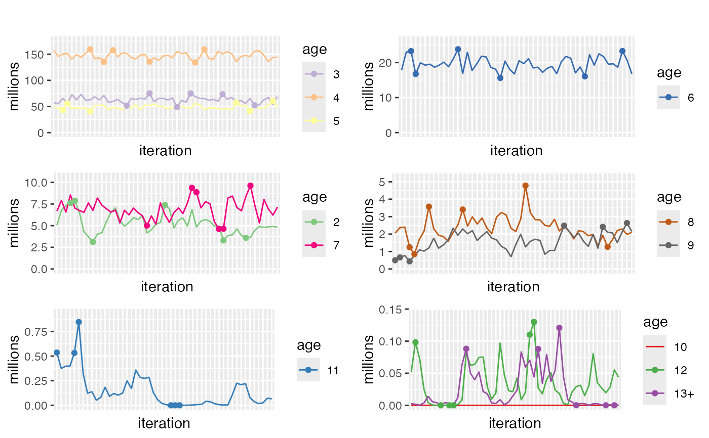

Plots a paneled plot with traces for age groups. That is the value for total catch at age in each iteration of eca.predict
plotAgeTraces(
prediction,
unit = "millions",
plusGroup = NULL,
nclust = 4,
iter.max = 20,
nstart = 10,
agecolors = NULL,
lowerquant = 0.05,
upperquant = 0.95,
catlimit = 8,
title = ""
)as returned by eca.predict or runRECA.
unit of traced estimates. See details.
Fish this age or older will be grouped in one trace.
the number of plots to distribute the ages and plus group on
maximal number of iterations for k-means clustering deciding which ages are ploted in same plot.
the number of random sets chosen for the k-means clustering
named vector matching ages to colors, if null a default color scheme is used
lower quantile in each age group to plot as points
upper quantile in each age group to plot as points
the upper limit for number of ages in a plot using categorical coloring. Plots with more than this number of ages will use a gradient coloring scheme
main title for plot
The number of iterations of eca.predict
is determined by the parameter 'nSamples' to eca.estimate or runRECA
and the parameter 'caa.burnin' (different from parameter 'burnin') to eca.predict or runRECA
parameter 'unit' supports:
Catch at age as number of fish
Catch at age as number of fish in thousands
Catch at age as number of fish in millions
Catch at age as mass in kilogrammes
Catch at age as mass in tons
Catch at age as mass in kilotonnes
In order to trade off readability of plots with the number of panels needed. the traces are clustered with a simple clustering algorithm and grouped in the same plots accordingly. Adjust clustering parameters, to get fewer or more plots.
data(recaPrediction)
plotAgeTraces(recaPrediction, plusGroup=13, nclust = 6)
